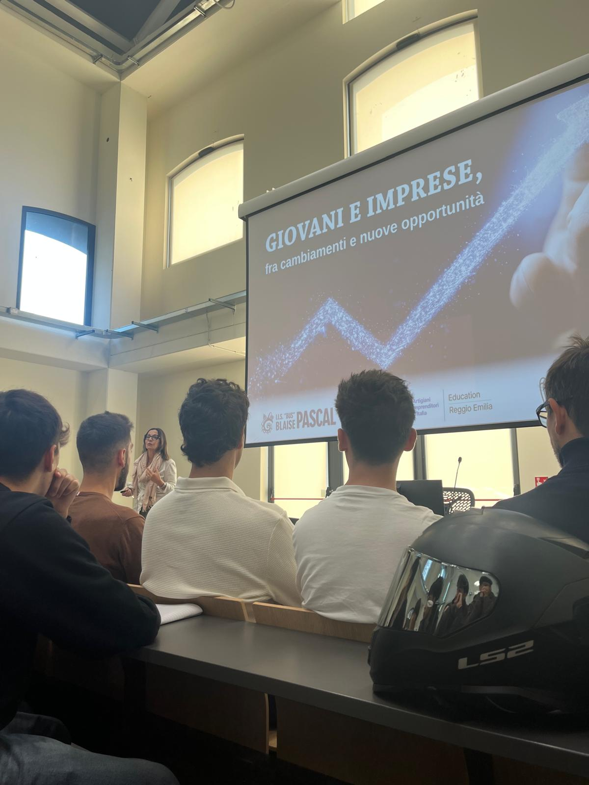

Giovani e Imprese:
Nuove Opportunità
L'incontro organizzato dalla CNA ha proiettato le classi quarte nel cuore delle dinamiche economiche attuali, partendo dal ruolo cruciale dell'Italia come seconda potenza manifatturiera d'Europa. Le riflessioni proposte dal World Economic Forum hanno evidenziato come il mercato del lavoro sia spinto da forze destabilizzanti: dalla transizione tecnologica ai profondi mutamenti demografici e geopolitici. L'automazione non è vista come una minaccia assoluta, ma come un fattore di selezione che premia le figure legate a cybersecurity, intelligenza artificiale e gestione dei dati.
Attraverso il modello di Holland abbiamo analizzato come le sei tipologie di personalità debbano trovare corrispondenza con gli ambienti lavorativi. Il dibattito si è spostato poi sull'equilibrio tra hard skills e soft skills: se le prime rappresentano il biglietto da visita specifico, sono la leadership, l'empatia e la gestione dello stress a determinare la resilienza di un profilo in un mercato in continua evoluzione.
L'evento ha illustrato la varietà dei percorsi post-diploma, mettendo a confronto l'offerta accademica tradizionale con gli ITS Academy, istituti con un legame strettissimo con le imprese del territorio reggiano. L'esperienza si è conclusa con la consapevolezza che l'orientamento non sia una decisione statica, ma un percorso dinamico di autoconoscenza e adattamento.
L'incontro ha fornito un quadro statistico solido, essenziale per affrontare con realismo le sfide della futura carriera lavorativa.

Strategie di
Self-Marketing
L'incontro "Mi Presento" ha offerto una guida operativa alla stesura del CV, analizzato non come documento burocratico ma come strumento di comunicazione. Partendo dallo standard Europass, le recruiter hanno illustrato come strutturare un profilo capace di bilanciare rigore formale e impatto visivo. Grande enfasi è stata posta sulla distinzione tra hard skills tecniche e soft skills trasversali, con un focus insolito sulla trasparenza: raccontare come si sono affrontate le difficoltà personali è stato indicato come valore aggiunto capace di dimostrare resilienza e onestà intellettuale.
La seconda fase ha spostato l'attenzione sulla gestione del colloquio: studiare il profilo dell'azienda e conoscere la struttura del team sono stati indicati come passaggi determinanti per differenziarsi. Sul piano comportamentale, l'incontro ha fornito consigli su come modulare le domande da porre al selezionatore, orientandole sulle responsabilità del ruolo e rimandando le questioni contrattuali a fasi più mature della selezione.
- Redazione di un curriculum vitae professionale secondo standard Europass
- Tecniche di gestione del colloquio e comunicazione efficace
- Consapevolezza del proprio profilo professionale
Gli strumenti condivisi dalle recruiter non sono solo utili per il primo impiego — sono un bagaglio di competenze trasversali applicabili lungo tutta la vita lavorativa.


Sviluppo Web e
Visione Imprenditoriale
L'incontro con i rappresentanti di Polarity ha scardinato l'idea obsoleta di sito web come insieme di pagine statiche. Oggi un'applicazione web è un ecosistema software complesso, paragonabile ai più avanzati programmi desktop. Attraverso l'analisi di colossi come WhatsApp o Instagram, è emerso come il lavoro degli sviluppatori non si limiti più alla scrittura di codice isolato, ma alla gestione di client mobile, server, database e infrastrutture cloud capaci di scalare per milioni di utenti.
Il cuore tecnico si è concentrato sull'ascesa di JavaScript: da semplice linguaggio browser a strumento universale grazie a Node.js e framework come Electron. Tuttavia la flessibilità richiede controllo — i relatori hanno sottolineato l'importanza di TypeScript come standard di affidabilità nei grandi progetti. Sviluppare software su commissione significa rispondere legalmente della qualità del prodotto: scrivere codice pulito non è una scelta estetica, ma un dovere professionale.
- Architettura client-server e cloud computing
- Panoramica su JavaScript, Node.js e TypeScript
- Ciclo di vita di un prodotto digitale professionale
- Importanza del portfolio e del profilo GitHub
La capacità dei relatori di intrecciare programmazione e logica di mercato ha reso la sessione estremamente concreta, lasciando una traccia significativa nel mio percorso di orientamento.